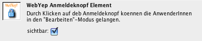

Anmeldeknopf

Das Symbol für den Anmelde-Knopf in der Objektpalette
Wenn die BenutzerInnen der Website eine Seite im Webbrowser bearbeiten wollen, müssen sie sich erst mittels Name und Kennwort anmelden: Durch Klick auf den an beliebiger Stelle einer Seite platzierten Anmeldeknopf, wird vom Webbrowser eine Eingabemaske für Name und Kennwort angezeigt. Erst nach erfolgreicher Überprüfung von Name und Kennwort wird die Seite im "Bearbeiten"-Modus angezeigt.
Dieses WebYep Element wird durch folgenden PHP Code repräsentiert:
<?php webyep_logonButton(true); ?> Details...
(siehe auch "Eigenschaften des Anmeldeknopfes " weiter unten)
- true/false: Ein boolscher Wert – gibt an, ob der Anmeldeknopf sichtbar sein soll.
true wenn er sichtbar sein soll.
false wenn nicht – der Anmeldeknopf ist dann aber immer noch vorhanden und kann angeklickt werden (wenn man weiß, wo er liegt).
Unabhängig davon ist aber immer die Eingabe von Benutzername und Kennwort erforderlich!
Zur Konfiguration von Benutzername und Kennwort siehe auch das Kapitel "WebYep konfigurieren".

Rechts unten der WebYep-Anmeldeknopf
Der Anmeldeknopf kann, aber muss nicht auf jeder bearbeitbaren Seite einer Website platziert werden. Ein Anmeldeknopf auf einer Seite genügt - nach erfolgreicher Anmeldung sind alle Seiten bearbeitbar, da die Anmeldedaten mittels Cookies im Webbrowser (verschlüsselt) gespeichert werden. Personen, die Webseiten mittels WebYep bearbeiten wollen (BenutzerInnen), sollten daher in ihren Webbrowsern die Cookies nicht deaktivieren!
Technischer Hinweis: Name und Kennwort werden in Cookies im Browser gespeichert, nicht aber auf der Festplatte, sondern nur im Arbeitsspeicher (Session-Cookie)! Das Kennwort wird dabei zusätzlich in Kombination mit dem aktuellen Datum verschlüsselt, sodass selbst im Falle eines "Cookie-Diebstahls" dieses Cookie nur einen Tag lang zum Bearbeiten der Seite berechtigen würde. Da die Eingabe im Logon-Formular aber von den Browsern unverschlüsselt übertragen wird (außer bei einer SSL-verschlüsselten Kommunikation via https), ist ein "Abhören" des Kennwortes theoretisch technisch denkbar.
Eigenschaften des Anmeldeknopfes

Das Eigenschaftsfenster für den Anmeldeknopf
sichtbar
Wenn diese Option deaktiviert wird, dann versteckt WebYep das Schloss-Symbol - der Anmelde-Knopf ist somit unsichtbar. Die BenutzerInnen müssen dann den Platz des Anmeldeknopfes auf der Webseite kennen (zB. direkt unterhalb des Firmenlogos) - wenn sie mit der Maus an diese Stelle klicken, erfolgt wie gewohnt die Anmeldung.
Das Ausblenden des Anmeldeknopfes macht das Anmelden zwar etwas zum Minensuchspiel, aber dafür ist die Wahrscheinlichkeit, dass herkömmliche BesucherInnen der Website mit dem Schloss-Symbol "herumspielen" und vielleicht versuchen das Kennwort zu erraten, weniger groß...